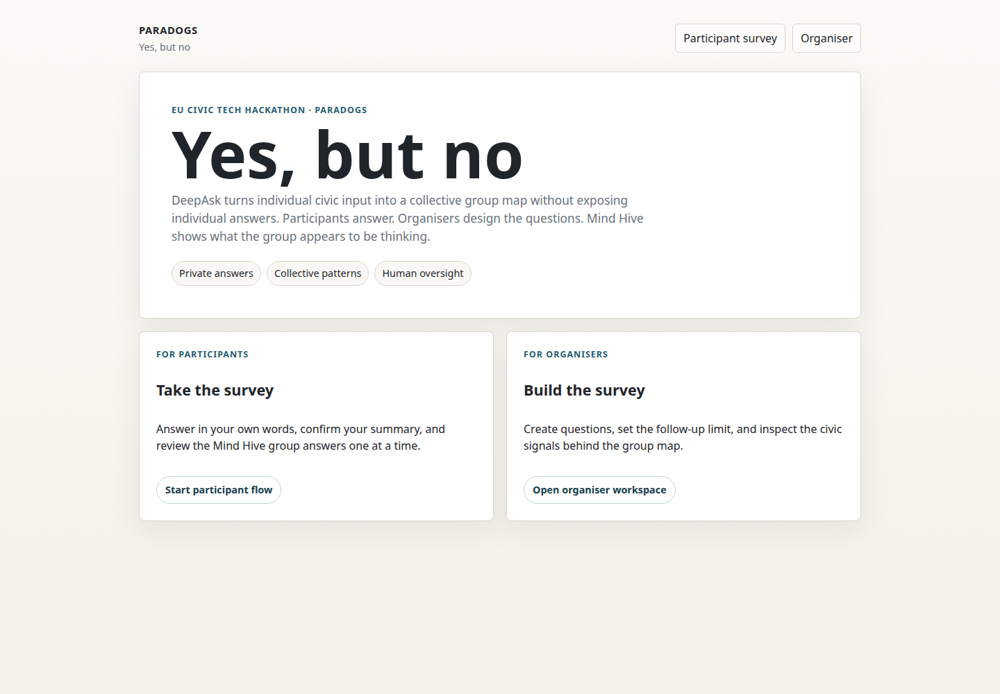
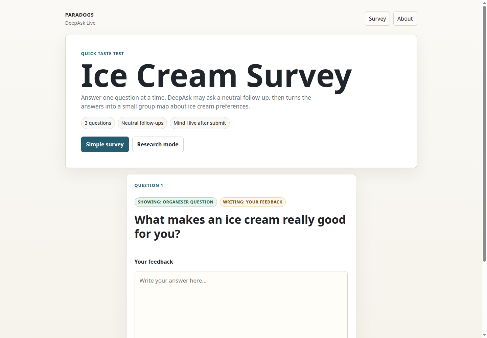
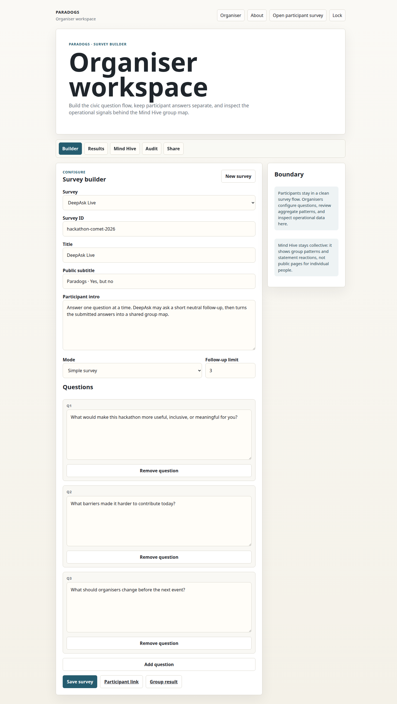
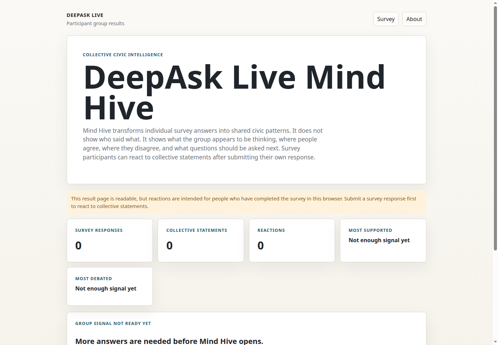
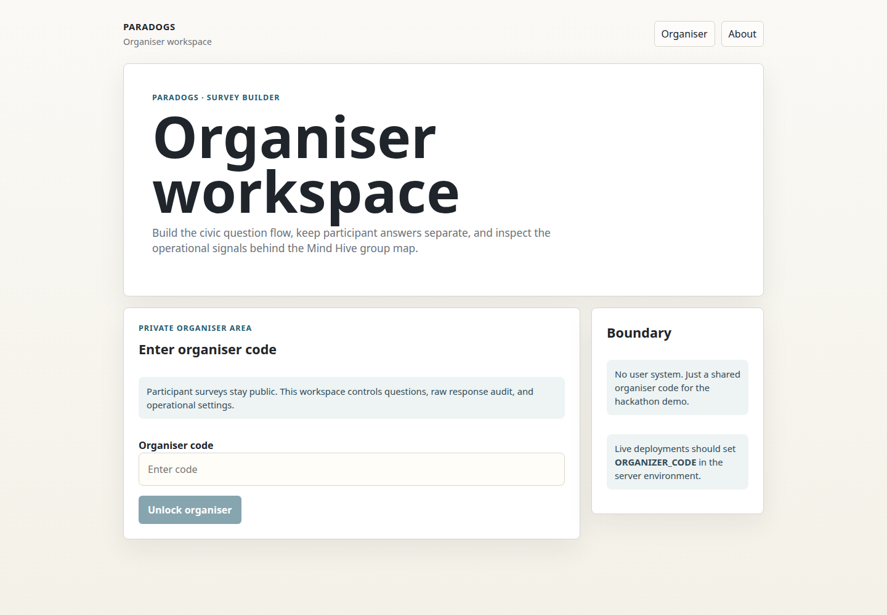

0:00-0:30
DeepAsk Live
The survey that asks back
A civic listening tool disguised as an ice cream tasting.
0:30-1:10
The problem
Most surveys taste flat
They collect ratings, boxes, and free text. Then the interesting meaning disappears into a spreadsheet.
- People answer in their own words.
- The system asks one neutral follow-up.
- The participant confirms the summary before it counts.

Start with a normal-looking survey. Then make it deeper.
1:10-1:55
Participant flow
One question, then one better question
The participant is not forced into a category first. They write naturally, and DeepAsk asks for the missing detail.
- No persuasion. No scoring. No judgement.
- The AI only clarifies meaning, barriers, needs, and suggestions.
- The ice cream theme keeps the demo light enough to understand fast.

The fun wrapper makes the mechanism easy to explain.
1:55-2:45
The governance layer
Original voice stays separate
The important part is not just the UI. It is the workpack behind every answer.
- Raw participant text is stored separately from AI interpretation.
- The summary is shown back to the participant.
- The organiser can audit what happened without exposing raw answers publicly.

The organiser side is where the audit trail lives.
2:45-3:40
Mind Hive
From answers to group signals
DeepAsk does not publish individual result pages. It turns completed workpacks into collective patterns.
- Agreements, tensions, minority concerns, and next questions.
- People react to group statements, not to other people.
- The goal is not a final verdict. It is a better next conversation.

The group layer opens only when there is enough signal.
3:40-4:35
Operator surface
A small tool, not a magic box
The organiser can create surveys, review summaries, export data, and inspect the researcher record.
- Survey builder for the question flow.
- Results and audit tabs for the operational record.
- JSON and CSV export when the data needs to leave the demo.

Public participants outside. Protected operator controls inside.
4:35-5:00
Closing
Better listening, one scoop deeper
DeepAsk is not trying to replace human judgement. It helps people say what they mean, and helps organisers see what the group is really saying.